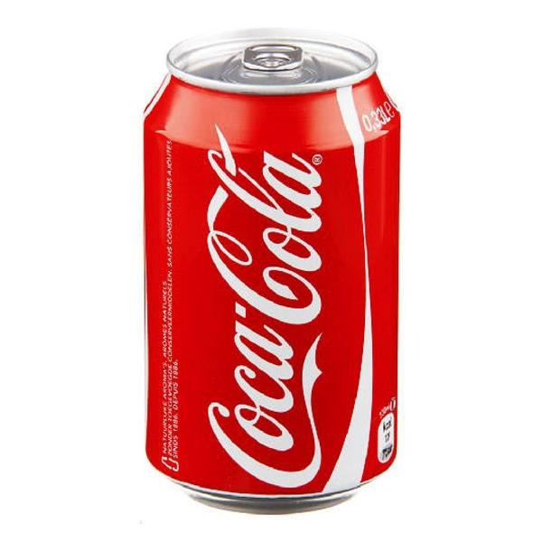
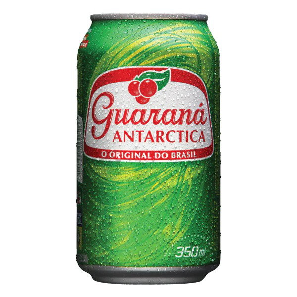
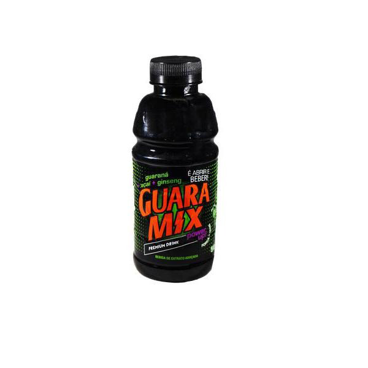
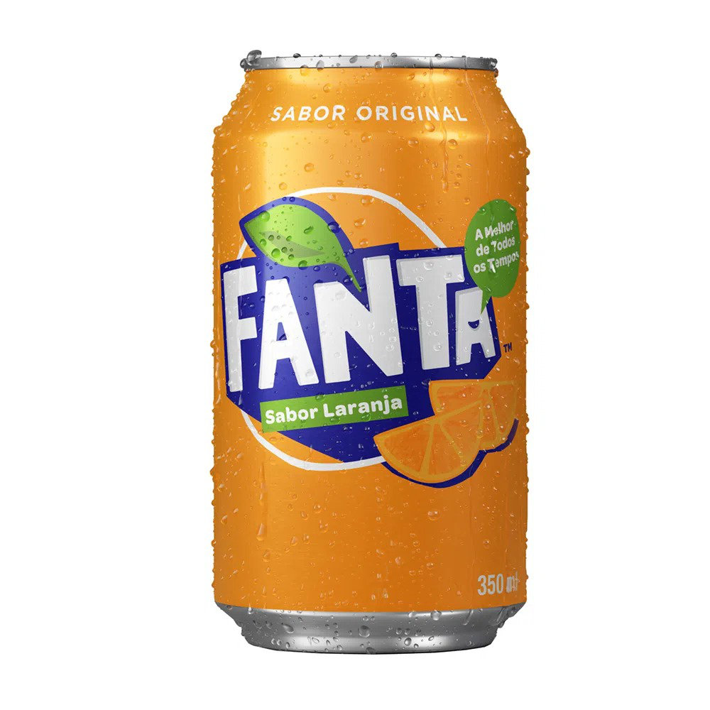
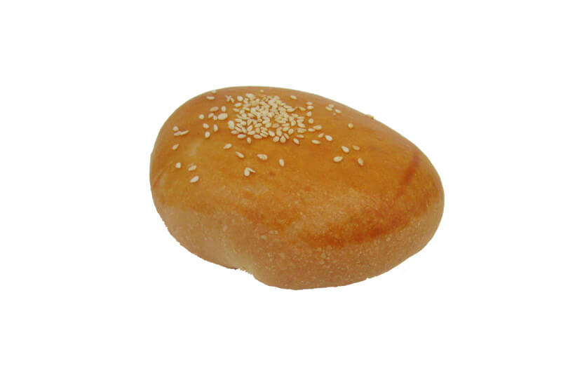
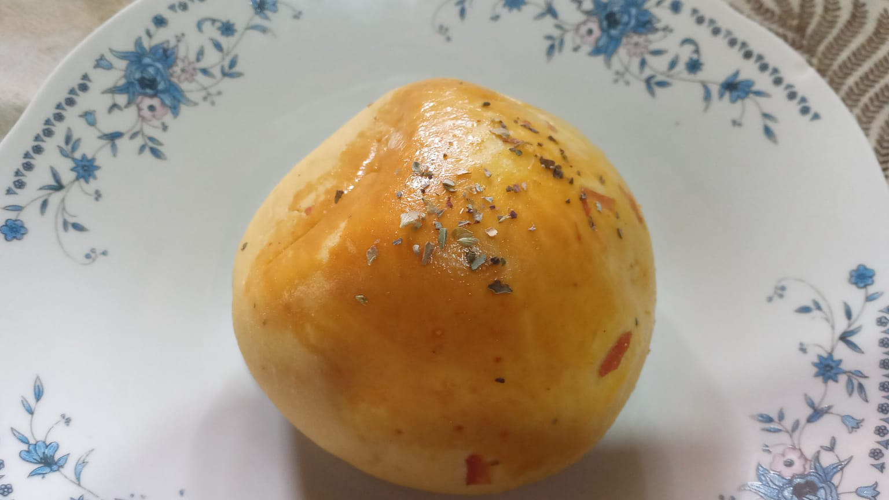
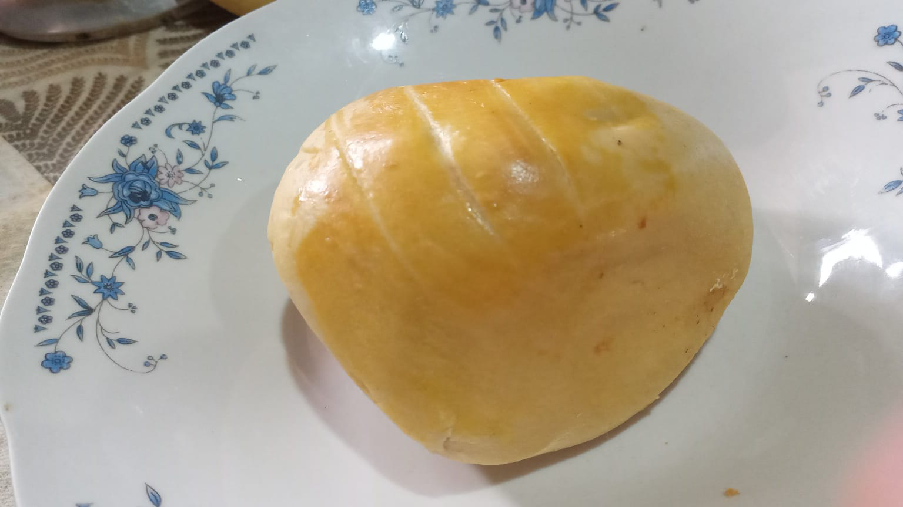

Bem vindo ao Ana Lanches
Seja bem-vindo ao nosso espaço virtual, onde a delícia encontra a conveniência! Na Tia Ana Lanches, estamos dedicados a fornecer uma experiência gastronômica única e personalizada que você nunca esquecerá.
Nosso Menu Tentador:
Explore um mundo de sabores em nosso menu diversificado. De hambúrgueres suculentos a wraps frescos, nossas opções cuidadosamente elaboradas certamente agradarão seu paladar. Não deixe de conferir nossas sobremesas irresistíveis e bebidas refrescantes para completar sua refeição.
Compromisso com a Qualidade:
Na Ana Lanches, a qualidade é a nossa prioridade número um. Usamos apenas os ingredientes mais frescos e saborosos em todos os nossos limites, para garantir que cada mordida seja uma explosão de sabor.
Facilidade de Pedido:
Faça seu pedido online em apenas alguns cliques. Oferecemos a conveniência de pedidos para viagem e entrega rápida, para que você possa desfrutar de nossas delícias onde e quando quiser.
Nosso Compromisso com Você:
Atendimento Excepcional: Nossa equipe dedicada está pronta para atendê-lo com um sorriso e ajudá-lo a escolher a melhor opção no menu.
 |
 |
 |
 |
Coca Cola
|
Guaraná
|
Guara Mix
|
Fanta Laranja
|
|
Água gaseificada, açúcar, extrato de noz de cola, cafeína, corante caramelo IV, acidulante ácido fosfórico e aroma natural. Não congelar. * %Valores Diários com base em uma dieta de 2.000kcal ou 8.400kj. Seus valores diários podem ser maiores ou menores dependendo de suas necessidades energéticas.
|
Ingredientes: Água gaseificada,açúcar,semente de guaraná,aroma natural de guaraná,acidulante:ácido cítrico;conservadores:sorbato de potássio e benzoato de sódio;corante;caramelo tipo IV. NÃO CONTÉM GLÚTEN.
|
Como é feito guaramix?
Guaramix é uma bebida mista de guaraná, açaí e ginseng.
A marca é controlada pelo grupo Mix do Brasil e já patrocina lutadores de MMA e o Cruzeiro.
|
A Fanta Laranja se torna a melhor opção de refresco para quem é fã do sabor da laranja. A perproduzida mistura entre água gaseificada e suco natural, resulta em um refrigerante de laranja refrescante e muito saboroso ao paladar, que conquistou fiéis consumidores por todo o Brasil. Possui menos 25% de açúcares!
|
|  |
 |
 |
 |
Hambuguer
|
Pão Pizza
|
Presunto e Queijo
|
Primavera
|
|
Um salgado de hambúrguer é uma deliciosa iguaria que combina elementos
de um hambúrguer tradicional com um formato mais prático e portátil.
Ele acompanha a carne de hamburguer com cheddar/catupiry em seu recheio!
|
Um pão de pizza, também conhecido como "pizza dough" em inglês,
é a base fundamental para a preparação de uma pizza.
É uma massa de pão que serve como a tela em branco
para todas as deliciosas coberturas que você pode imaginar.
|
O salgado de presunto e queijo é uma iguaria saborosa e popular
que combina o delicioso sabor do presunto e do queijo
em uma massa que pode ser frita ou assada.
|
O salgado primavera é u mdelicioso salgado de massa assada que acompanha
presunto, queijo, frango e milho em seu recheio!
|
|
Os salgados são verdadeiras obras-primas da culinária, capazes de despertar os sentidos e fazer a alegria de qualquer paladar. Suas combinações criativas de ingredientes, texturas e sabores tornam cada mordida uma experiência deliciosa e memorável.
A versatilidade dos salgados é notável, desde os clássicos como empadas,
coxinhas e pastéis, até os mais sofisticados como os salgados gourmet.
Cada tipo de salgado oferece uma mistura única de aromas
e gostos que nos transporta para diferentes cantos do mundo culinário.
 tiaanalanches
tiaanalanches
 (61)991614338
anakkatia@gmail.com
(61)991614338
anakkatia@gmail.com
|
|